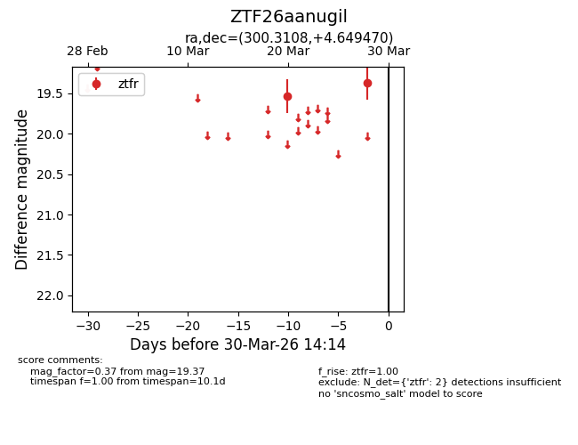
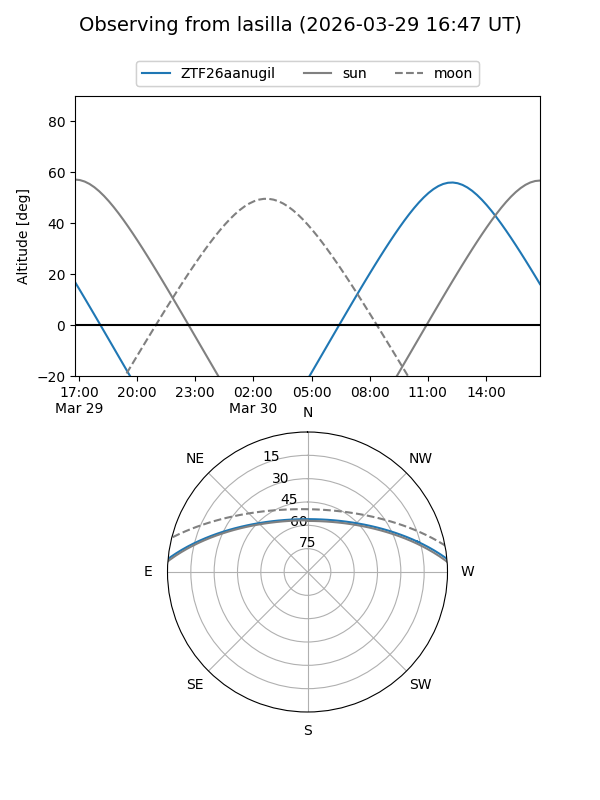
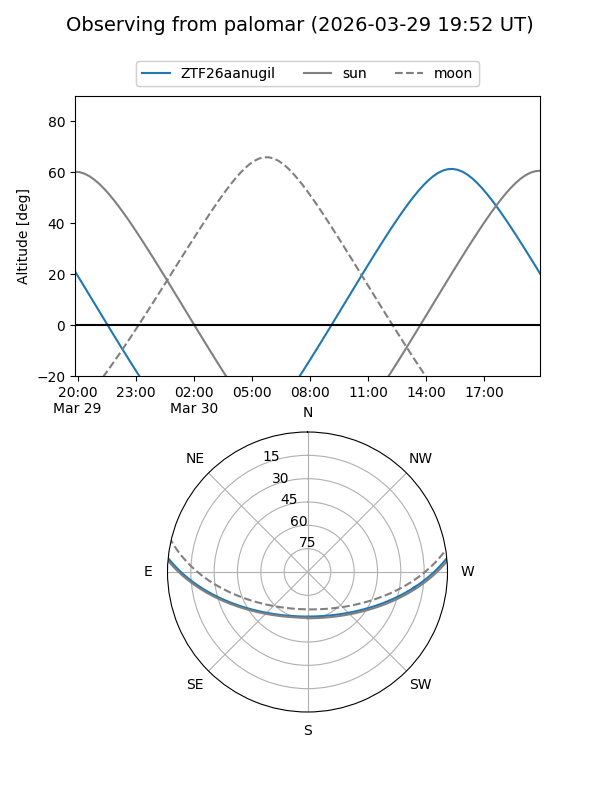

ZTF26aanugil
Target ZTF26aanugil at 2026-03-30 14:17
Aliases and brokers:
FINK: link
Lasair: link
ALeRCE: link
alt names
ZTF26aanugil (ztf,fink_ztf)
Coordinates:
equatorial (ra, dec) = 300.3108,+4.64947
equatorial (HMS+DMS) = 20:01:14.60,+04:38:58.09
galactic (l, b) = (45.2966,-13.24195)
Flags:
Photometry:
last ztfr=19.37
2 ztfr detections
Lightcurve

Visibility


Additional plots